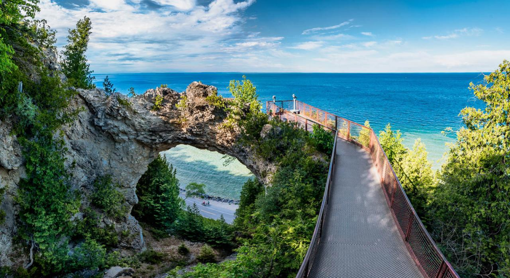

Yellowstone


Geographical Location: North America
Yellowstone is the first national park in the United States. It covers over 2.2 million acres, and provides an opportunity to see wildlife and explore geothermal areas. In fact, Yellowstone contains about half the world's active geysers.
These unique opportunities also bring out a lot of bad decisions among the tourists. Every year visitors injure themselves or the wildlife by getting close to the animals. You can see examples of people making bad decisions by visiting Yellowstone National Park: Invasion of the Idiots, Tourons of Yellowstone, or Cowboy State Daily.
Photo Gallery


Mackinac Island
Geographical Location: North America
Mackinac Island sits in Lake Huron, between Michigans Upper and Lower peninsulas. Mackinac Island State Park, with trails, woods and the limestone Arch Rock formation, covers most of the island.
You can stay at the islands 5-star hotel. Book a room here at the Grand Hotel: grand hotel website
Photo Gallery
The Palaces of Uddaipur
Geographical Location: India
Udaipur, formerly the capital of the Mewar Kingdom, is a city in the western Indian state of Rajasthan.
Uddaipur has a rich history of royalty in India. Learn more here : Uddaipur history website
Photo Gallery
Detroit: The Motor City!
Geographical Location: Michigan
Detroit, also known as the Motor City, is the biggest city in the midwest state Michigan
Detroit is making many efforts to improve the city. Read about them here: Detroit improvements